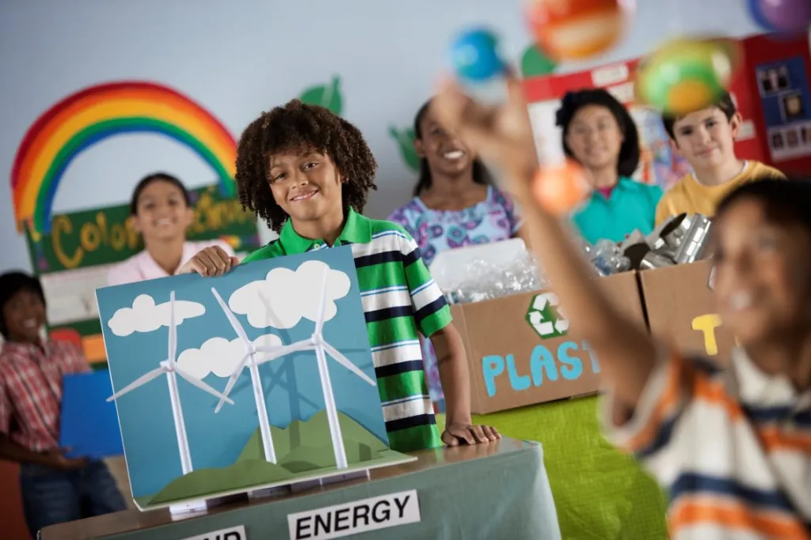

Feira de Ciências
A Feira de Ciências estimula o pensamento crítico e a curiosidade científica das crianças por meio de experimentos e apresentações.
Galeria

Indicadores de Impacto
- 2 escolas participantes
- 40 experimentos realizados
- 200 crianças envolvidas